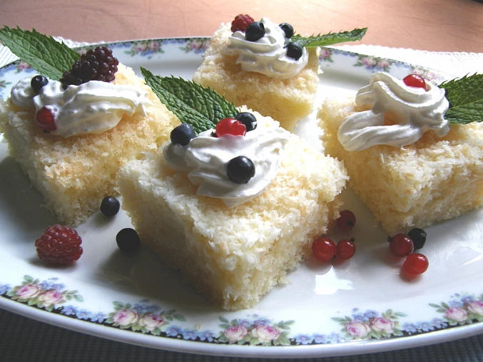

Coconut Cake

Description
The easiest recipe on the planet
Ingredients
- 2 cups self raising flour
- 1 cup caster sugar
- (optional) 1 sachet vanilla sugar
- 1 cup milk
- 2 eggs
- 1/2 cup melted butter or oil
- Springling dough: 1 cup dessicated coconut + 1/2 cup icing sugar
- Pouring on baked dough: 1-2 bottles heavy cream
Steps
- Preheat oven to 180-185 °C.
- In a bowl, mix all ingredients well and form dough.
- Pour the dough into a form with a higher top with baking paper.
- Sprinkle the dough with a mix of coconut and icing sugar.
- Bake for about 25 minutes until golden reddish color.
- Immediately after you take the form out of the oven, pour heavy cream evenly to the whole surface so that it soaks into the hot dough.